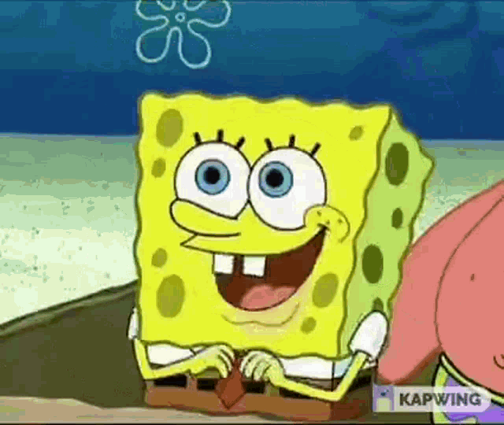

| VÝHODY | Bezpečnosť a transparentnosť | Ekonomická výhoda | Žiadny "lock-in" | Flexibilita a prispôsobivosť (Kustomizácia) | Nezávislosť od prežitia autora |
| NEVÝHODY | Chýbajúca oficiálna podpora | Problémy s kompatibilitou hardvéru | Môže obsahovať vírusy či malware | Skryté náklady | Riziko opustenia projektu |
